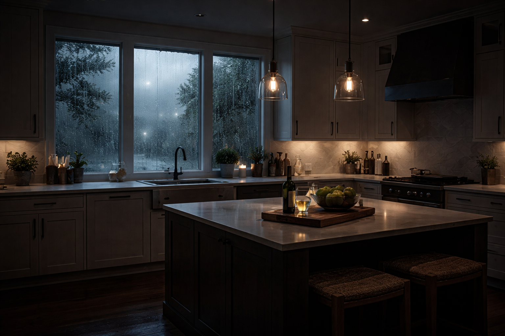

Andreas Jansson
Civilekonom i grunden med långvarigt teknikintresse. De senaste åren har jag satsat fullt ut på AI och arbetat praktiskt med allt från finjustering av modeller till produktion av grafiskt material och texter.
Arbetar i dag med IT och AI-konsultation samt med att hjälpa organisationer att använda AI för kodning, grafik, analys, artikelskrivande och filmskapande. Brinner för folkbildning och för att lära ut det jag själv tycker är roligt och användbart.
Har tidigare föreläst hos bl.a. ALMI Företagspartner, Folkuniversitetet, Medborgarskolan och Vuxenskolan.

Kursens upplägg
Kursen består av två tillfällen à 1,5 timme, klockan 19.00-20.30, med 10 minuters paus mellan 19.50 och 20.00.
Ställ frågor löpande under kursen. Ju fler frågor, desto bättre. Kursen är tänkt att vara levande och dialogbaserad.
Under genomgångarna finns kortare övningsmoment där ni under några minuter får utföra en praktisk uppgift för att direkt testa det vi går igenom.
Det finns även möjlighet att frivilligt lämna in en hemuppgift där ni skapar olika bilder för att öva vidare på det ni lärt er under kursen.
Ni är alltid välkomna att mejla mig frågor under kursens gång.
Jag har designat den här kursen som om det vore en kurs jag själv hade velat ge till mig själv.
Målet är att lyfta er till nästa nivå.

Vad ni kommer att få för kunskaper och färdigheter efter kursen
Efter kursen kommer ni att kunna skapa grafik och redigera bilder med hjälp av AI. Det gör att ni kan bli en extra tillgång på er arbetsplats eller stärka er roll som företagare. Förhoppningsvis kan det leda till högre lön, bättre uppdrag eller större avkastning över tid.
Driver ni eget bolag får ni verktyg som gör det möjligt att nå fler kunder. Grafik kan skapa en wow-effekt och bidra till att kunder får större förtroende för ert företag. Samtidigt kan ni arbeta mer effektivt och minska kostnader för reklam, marknadsföring och grafisk produktion.
Ni kommer också att kunna som grafiker kunna likt konstnärer förmedla idéer, tankar och koncept visuellt på ett helt nytt sätt. AI gör det möjligt att snabbt gå från tanke till bild och att testa, justera och utveckla idéer utan långa omvägar.
Ni får dessutom verktyg och trygghet att använda AI på ett lekfullt och tillgängligt sätt, så att ni kan skapa roliga och kreativa bilder utan krav på förkunskaper. Kunskapen går också enkelt att dela vidare till familj och vänner för gemensamt skapande.
Ni kommer även att kunna förmedla tankegods genom grafik som ni annars kanske inte haft tid eller ork att ta fram, men som är desto viktigare att kommunicera.
Som helhet ger kursen er större uttrycksfrihet, bättre verktyg och ökad handlingsförmåga.
Men oavsett vad jag tycker så är det ni som styr kursens riktning. Det är ni som styr kursen dock så ni bestämmer vad det är vi ska fokusera på.
Vad vill ni lära er?
Vad är en AI?
AI kan beskrivas som vikter i ett neuralt nätverk som tränats för att känna igen, replikera och slutföra mönster, med viss variation.
En AI bygger på neurala nätverk som lär sig mönster i data. En LLM, Large Language Model, arbetar med next token prediction, vilket innebär att den beräknar vilket tecken, eller token, som sannolikt kommer härnäst utifrån tidigare mönster. Text delas upp i tokens och bilder omvandlas till numeriska matriser som beskriver färg, ljus och position. För modellen finns det därför inga ord eller bilder i mänsklig mening, utan endast tal. Genom att justera vikter under träning försöker modellen göra pattern completion, alltså fylla i fortsättningen på ett mönster. Varje generering innehåller ett visst mått av slump, vilket gör att resultaten kan variera. I grunden kan allt som kan representeras symboliskt tränas på, och bildgenerering bygger på att modellen lärt sig visuella mönster och relationer i numerisk form.

Hur vi ser på AI i kursen
AI ska ses som ett verktyg, inte som något som ersätter människan. Precis som en grävmaskin inte ersätter grävmaskinisten, utan förstärker dennes förmåga att forma och skapa, är AI ett redskap som hjälper er att skulptera fram era idéer snabbare och mer precist.
Det är fortfarande ni som står för kreativiteten, intentionen och omdömet. AI är kraften som gör det möjligt att genomföra det ni redan kan föreställa er.

7. Grundläggande prompting
En prompt är den instruktion du ger till en AI för att få den att utföra något. Det kan handla om att skriva text, skapa bilder eller redigera material. Prompten fungerar ungefär som att ge en grävmaskinist tydliga instruktioner om hur en grop ska grävas och med vilka mått. Ju tydligare instruktionen är, desto större är chansen att resultatet blir som du tänkt dig.
AI:n försöker alltid utföra det du ber den om, utifrån hur du formulerar din instruktion. Små skillnader i formulering kan därför ge stora skillnader i resultat.
Vi ska titta på två exempel.
Prompt för att generera en artikel
Här ser vi skillnaden mellan en vag och en tydlig instruktion.
Dåligt exempel: "Skriv en artikel om AI."
Bra exempel: "Du är en erfaren journalist. Skriv en lättläst artikel om kreativ AI för nybörjare, cirka 400 ord, med ett pedagogiskt språk och ett tydligt avslut. Nämn Nvidia planer på datacenter i rymden"
Prompt för att generera en bild
Här beskriver du istället vad som ska synas, hur det ska se ut och vilken känsla eller stil bilden ska ha.
Dåligt exempel: "En hund."
Bra exempel: "En glad golden retriever-valp som springer i en solig park, mjukt ljus, fotorealistisk stil."

6. Våra första verktyg
Chatgpt.com erbjuder gratiskonton, ni kan registrera er på https://chatgpt.com. Där kommer ni kunna generera texter och bilder gratis.
Som komplement till detta och på grund av mångfalden av möjligheter kommer vi också använda plattformen https://arena.ai/. Det är en webbplats som erbjuder en begränsad men kostnadsfri möjlighet att testa de senaste AI-modellerna. Syftet är att samla in data för att kunna skapa en ranking över vilka modeller som presterar bäst inom olika kategorier.
På plattformen finns både stängda, kommersiella modeller, såsom OpenAI ChatGPT, Googles Gemini och Anthropic Claude, samt öppna open source-modeller, till exempel DeepSeek.
Här kan ni generera texter, bilder och även video med hjälp av olika modeller, och samtidigt jämföra hur de presterar i praktiken. Plattformen ger också en översikt över vilka modeller som är starkast inom olika områden och användningsfall.
Vi ska nu lära oss att navigera på plattformen, eftersom vi kommer att använda den som ett centralt verktyg under kursen för att skapa bilder.
Vill att alla surfar in på denna nu om ni har möjlighet så ska ni få göra tester själva sen.

Använd kontrollerna för att spela/pausa och klicka i timeline för att hoppa i videon.
Praktiska övningar
Klicka på ett kort för att vända på det och se instruktionerna.
Övning 1
Klicka för att visaPrompting och textskapande
Syfte: Lära sig styra AI genom text, förstå iteration och efterredigering.
Deltagarna får uppdraget: Ni har blivit anlitade att skriva artiklar åt Torekovsmagasinet.
- Skriv en prompt i ChatGPT där AI ska skriva en artikel om grundlagsbytet i Sverige på 1970-talet.
- Läs igenom texten som skapas.
- Skriv en ny prompt där ni ber AI skriva om samma innehåll, men kortare och i klarspråk, anpassat för en bred allmänhet.
- Observera hur AI använder tidigare text och hur ni kan förändra innehållet steg för steg utan att börja om.
- Testa att justera tonen ytterligare, till exempel mer pedagogisk eller mer journalistisk.
Övning 2
Klicka för att visaBildskapande successiv prompting
Syfte: Förstå hur bilder byggs upp stegvis och hur promptformeln används.
- Skapa en bild av en åker.
- Be AI ändra åkern till gräs.
- Lägg till en röd stuga på gräset.
- Lägg till glada människor utanför stugan.
- Be att människorna ska bära rosa kepsar.
- Lägg till en bil utanför stugan.
- Ändra perspektivet (uppifrån, snett höger).
- Byt färg på bilen.
- Gör bilden fotorealistisk.
- Ändra tid på dygnet till kväll.
- Ändra stilen till tecknad.
- Ändra stilen till Picassos stil.
- Flytta scenen till Mars.
- Lägg till guldig text: "Boka din rymdsemester".
Promptformel: Subjekt, Handling, Miljö, Ljus/Kamera, Stil.
Övning 3
Klicka för att visaKommersiell poster
Syfte: Träna på att arbeta metodiskt i ett betalt uppdrag.
Scenario: Ni har fått i uppdrag att skapa en poster till en båtmässa som heter "Allt för sjön".
- Skapa först en bild utan någon text.
- När ni är nöjda med bilden, be AI lägga till mässans namn.
- Lägg därefter till mer text stegvis, till exempel datum eller plats, utan att förändra resten av bilden.
- Reflektera över varför det är viktigt att arbeta stegvis i kommersiella uppdrag.
Övning 4
Klicka för att visaBildredigering & förbättring
Syfte: Visa hur AI justerar befintligt material.
Del A: Objekt och miljö
- Utgå från bilen från tidigare övning.
- Ändra färg på bilen.
- Flytta bilen till New York.
- Gör bilden realistisk.
Del B: Ljussättning
Scenario: En mäklarfirma vill förbättra en bild.
Arbetssteg: Högerklicka på bilden nedan, välj Kopiera bild och klistra in den i AI-chatten för att modifiera den.
- Gör vädret ljusare utomhus.
- Justera ljuset i ett kök så det ser inbjudande ut.
Övning 5
Klicka för att visaPorträtt & personredigering
Syfte: Lära sig skapa professionella porträtt.
Välj referensbild: Ladda ner valfri bild nedan och använd den i övningen.


- Ladda upp den bild du valde.
- Be AI göra bilden till ett stilrent svartvitt porträtt.
- Be AI byta kläder på personen.
- Justera ljus och kontrast för ett professionellt uttryck.
Övning 6
Klicka för att visaBild till text och idé
Syfte: Koppla samman textinnehåll och bild.
- Be AI skriva en artikel på cirka 300 ord om AI-utvecklingen och datacenter i rymden.
- Texten ska vara så enkel att en 12-åring kan förstå den.
- När texten är klar, be AI skapa en bild som passar till artikeln.
- Reflektera över hur väl bilden förstärker innehållet.
Övning 7
Klicka för att visaSkiss till färdig bild
Syfte: Visa att teckningskunskaper inte krävs.
Referens: Titta på skissen nedan. Den visas som exempel och behöver inte laddas ner.

- Använd skissen ovan som visuell referens.
- Be AI tolka skissen och skapa en färdig bild.
- Justera stil, miljö eller uttryck vid behov.
Övning 8
Klicka för att visaFormat för sociala medier
Syfte: Förstå format och proportioner.
Genomgång av format:
- Facebook: 1:1, 1.91:1
- Instagram: 1:1, 4:5, 9:16
- TikTok: 9:16
Scenario: Marits Blommor
- Skapa en Facebook-banner som marknadsför rea på gula tulpaner.
- Anpassa bilden till rätt format.
- Reflektera över hur formatet påverkar uttrycket.